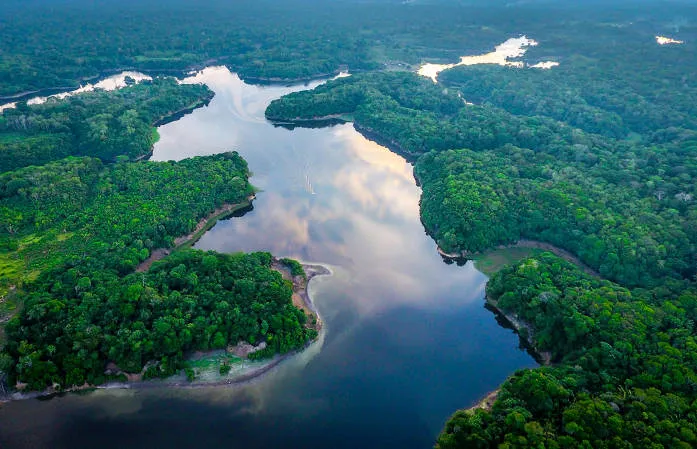
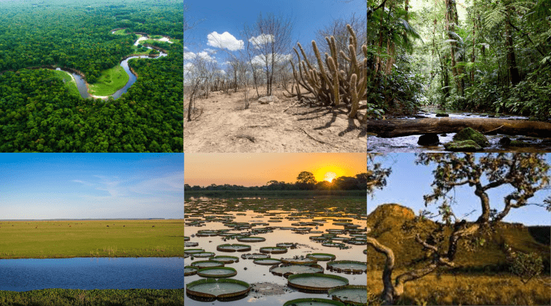
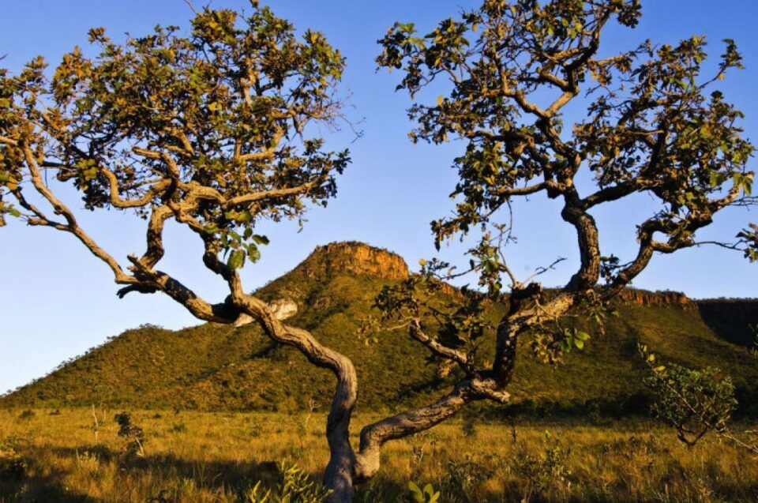

abrange a maior bacia hidrográfica do mundo, bem como a maior floresta tropical. é considerado o conjunto de ecossistemas de maior diversidade do planeta. abriga milhares de espécies de animais e vegetais, entre catalogados e desconhecidos. tem em sua flora um enorme potencial medicinal, atraindo olhares do mundo todo.

A Caatinga apresenta um clima quente e seco e um solo raso e pedregoso, assim, a vegetação dessa região apresenta adaptações contra a perda de água, como a perda de suas folhas na seca e a presença de espinhos. Dentre as espécies pertencentes à flora da Caatinga, podemos citar o mandacaru, o umbuzeiro e o juazeiro.

Sua vegetação possui características predominantes, como árvores de tronco grosso e tortuoso, além de gramíneas e arbustos. O clima do Cerrado é tropical sazonal, apresentando duas estações definidas: uma seca e outra chuvosa.

Presença de árvores de médio e grande porte que formam uma floresta densa e fechada. Grande biodiversidade com a presença de diversas espécies animais e vegetais.
Pampa é um bioma localizado no extremo Sul do país. Ele se caracteriza por apresentar um relevo pouco acidentado, e sua vegetação é composta por plantas herbáceas, arbustos e árvores de pequeno porte, como o capim-forquilha, o trevo-nativo e o algarrobo.

A principal característica do Pantanal é ser uma enorme planície alagada, localizada bem no centro da América do Sul. A maior parte da sua extensão está localizada no Brasil, ocupando cerca de 2% do território brasileiro, no entanto, há partes do Pantanal no Paraguai e na Bolívia.
Biomas brasileiros são regiões que compreendem grandes ecossistemas constituídos por uma comunidade biológica com características semelhantes. Segundo o Instituto Brasileiro de Geografia e Estatística (IBGE), o Brasil possui seis biomas:

    Cerrado

    Amazônia

    Caatinga

    Mata Atlântica

    Pantanal

    Pampa"

Veja mais sobre "Biomas brasileiros" em: https://brasilescola.uol.com.br/brasil/biomas-brasileiros.html